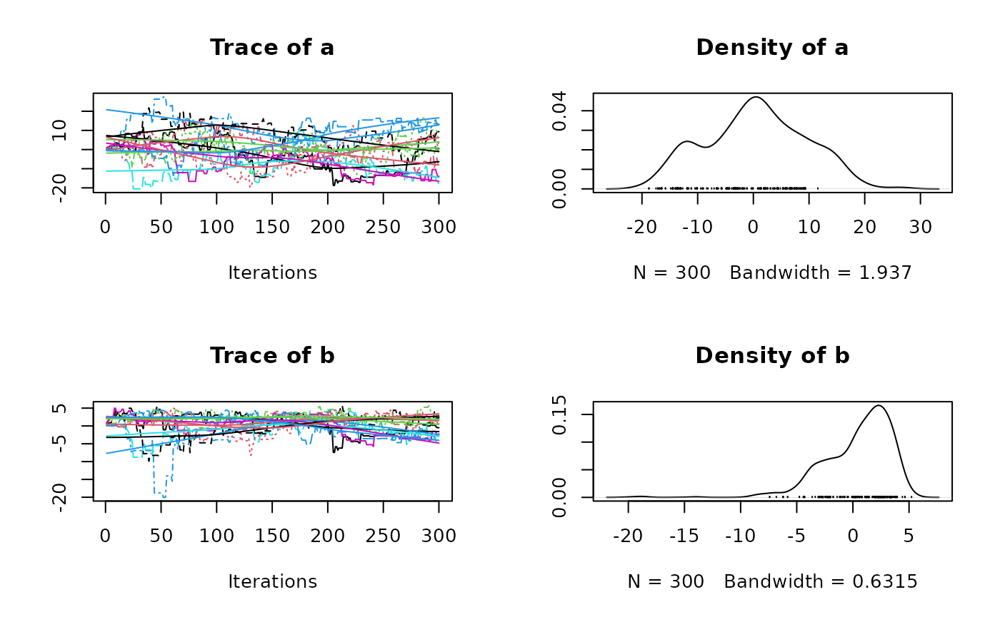
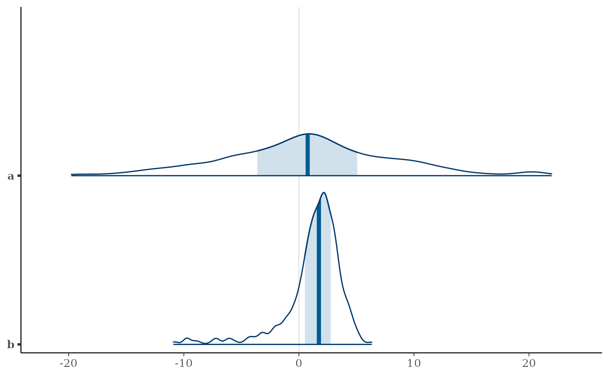
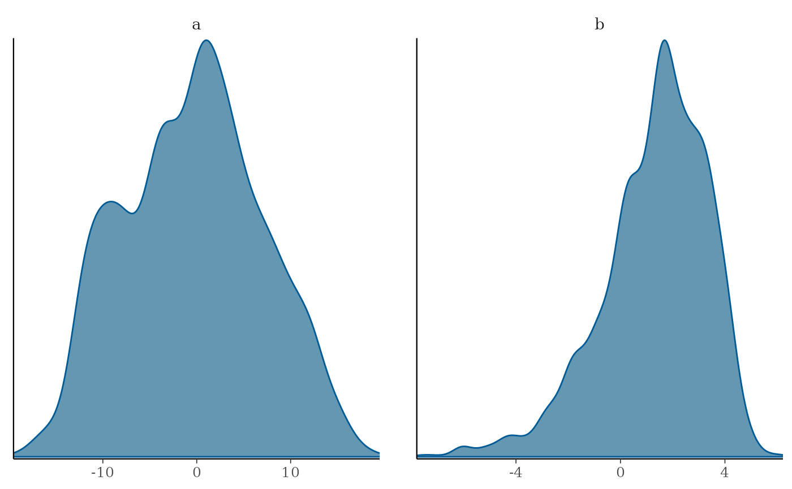
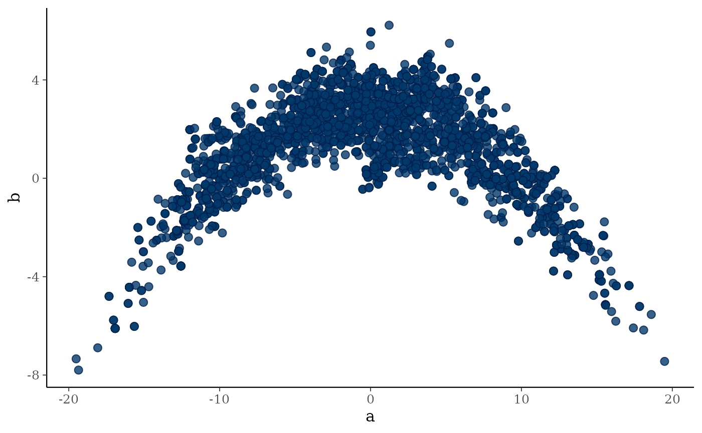
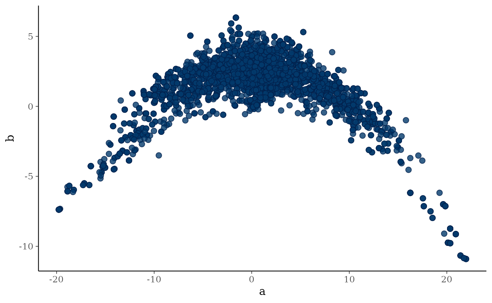
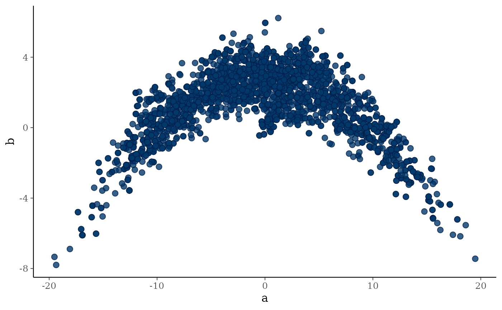
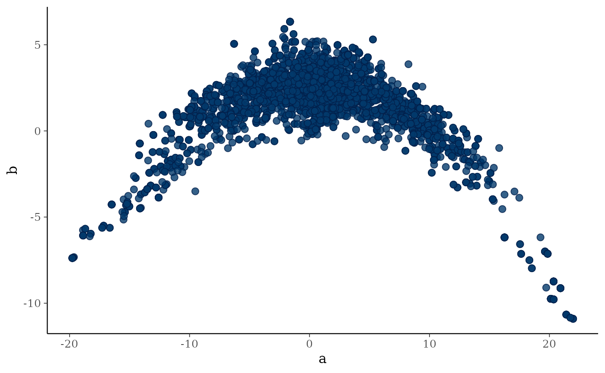
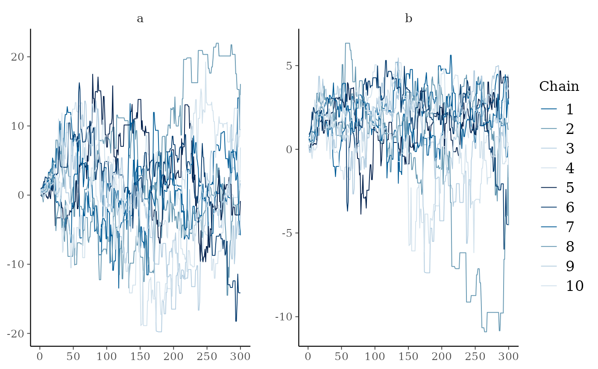
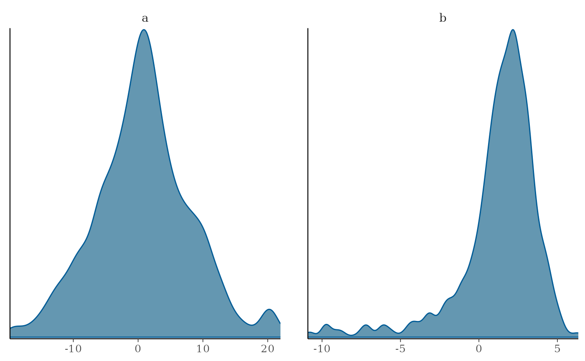

Interaction of mcmcensemble with other packages for MCMC diagnostic and plotting
Source:vignettes/diagnostic-pkgs.Rmd
diagnostic-pkgs.RmdTo keep mcmcensemble as lean as possible, all diagnostics and plotting facilities are outsourced to other packages. It makes more sense to rely on these generic packages as the tools they provide can be used by many other MCMC packages.
To our knowledge, there are two such packages that are readily compatible with mcmcensemble (but please open an issue in the GitHub repository if you find others):
- coda, a widespread package defining a common format for MCMC object and various utilities
- bayesplot, a more recent package developed by the Stan team a which offers a larger variety of plotting options based on ggplot2
library(mcmcensemble)
## a log-pdf to sample from
p.log <- function(x) {
B <- 0.03 # controls 'bananacity'
-x[1]^2 / 200 - 1/2 * (x[2] + B * x[1]^2 - 100 * B)^2
}
unif_inits <- data.frame(
a = runif(10, min = 0, max = 1),
b = runif(10, min = 0, max = 1)
)coda
library(coda)Usage of the coda package to diagnostic and plot your mcmc chains require the use of the coda = TRUE option in your MCMCEnsemble() call:
## use stretch move, return samples as 'coda' object
res <- MCMCEnsemble(
p.log,
inits = unif_inits,
max.iter = 3000, n.walkers = 10, method = "stretch", coda = TRUE
)
#> Using stretch move with 10 walkers.The estimations are stored in the samples element of the result. This element is of class mcmc.list:
class(res$samples)
#> [1] "mcmc.list"As such, it can use specific method from the coda package, such as summary() or plot()
summary(res$samples)
#>
#> Iterations = 1:300
#> Thinning interval = 1
#> Number of chains = 10
#> Sample size per chain = 300
#>
#> 1. Empirical mean and standard deviation for each variable,
#> plus standard error of the mean:
#>
#> Mean SD Naive SE Time-series SE
#> a 1.7088 10.254 0.18720 1.1741
#> b -0.4099 4.032 0.07362 0.3533
#>
#> 2. Quantiles for each variable:
#>
#> 2.5% 25% 50% 75% 97.5%
#> a -17.25 -5.973 1.1492 8.376 21.817
#> b -11.00 -1.725 0.9986 2.253 4.152
plot(res$samples)
You can also use any other function from the coda package, such as effectiveSize():
effectiveSize(res$samples)
#> a b
#> 59.27473 113.52668Please report to coda documentation to see the complete list of available functions.
bayesplot
library(bayesplot)
#> This is bayesplot version 1.8.0
#> - Online documentation and vignettes at mc-stan.org/bayesplot
#> - bayesplot theme set to bayesplot::theme_default()
#> * Does _not_ affect other ggplot2 plots
#> * See ?bayesplot_theme_set for details on theme settingAs opposed to the previous example, bayesplot is readily compatible with all outputs from MCMCEnsemble(), no matter the value you specified for the coda argument:
res_nocoda <- MCMCEnsemble(
p.log,
inits = unif_inits,
max.iter = 3000, n.walkers = 10, method = "stretch", coda = FALSE
)
#> Using stretch move with 10 walkers.
res_coda <- MCMCEnsemble(
p.log,
inits = unif_inits,
max.iter = 3000, n.walkers = 10, method = "stretch", coda = TRUE
)
#> Using stretch move with 10 walkers.We can use the various plotting facilities:
# Density of log-posterior of each parameter
mcmc_areas(res_nocoda$samples)
mcmc_areas(res_coda$samples)
mcmc_dens(res_nocoda$samples)
mcmc_dens(res_coda$samples)
# All the sample points in the parameter space
mcmc_scatter(res_nocoda$samples)
mcmc_scatter(res_coda$samples) 

However, a limited number of functions still only work with coda = TRUE. It is for example the case of mcmc_trace():
mcmc_trace(res_coda$samples)
Because bayesplot relies on ggplot and its layer system, you can add extra layers as necessary. For example, a common request is how to display the prior and posterior density on the same plot. If your prior is wrapped in a R function, you can then use the overlay_function() for this. In our case, we used a uniform distribution as our prior:
mcmc_dens(res_coda$samples) +
overlay_function(fun = "dunif", geom = "density", color = "red", fill = "darkred", alpha = 0.5)